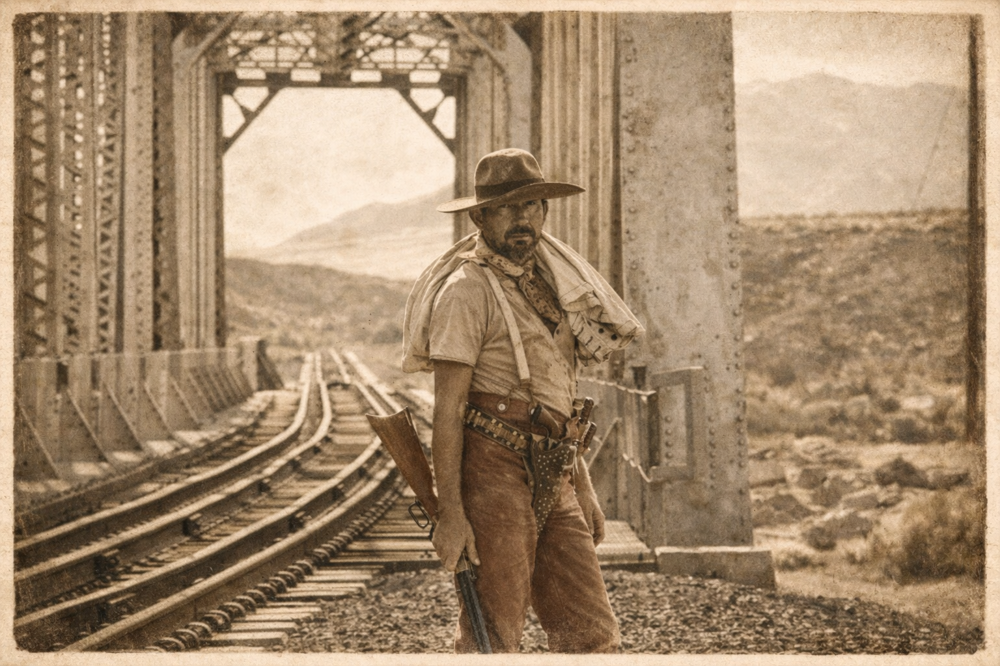
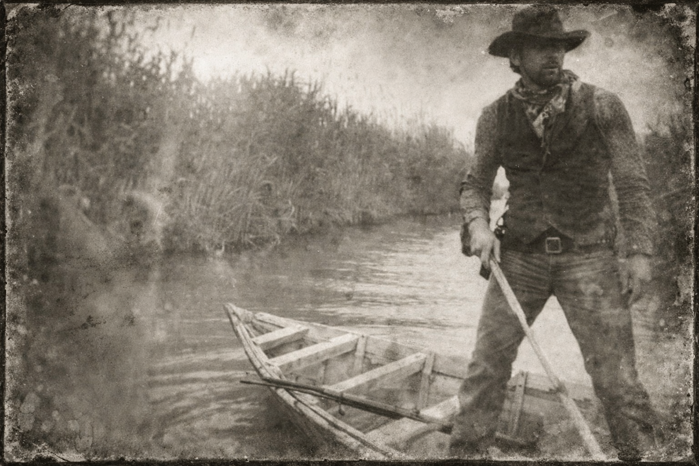
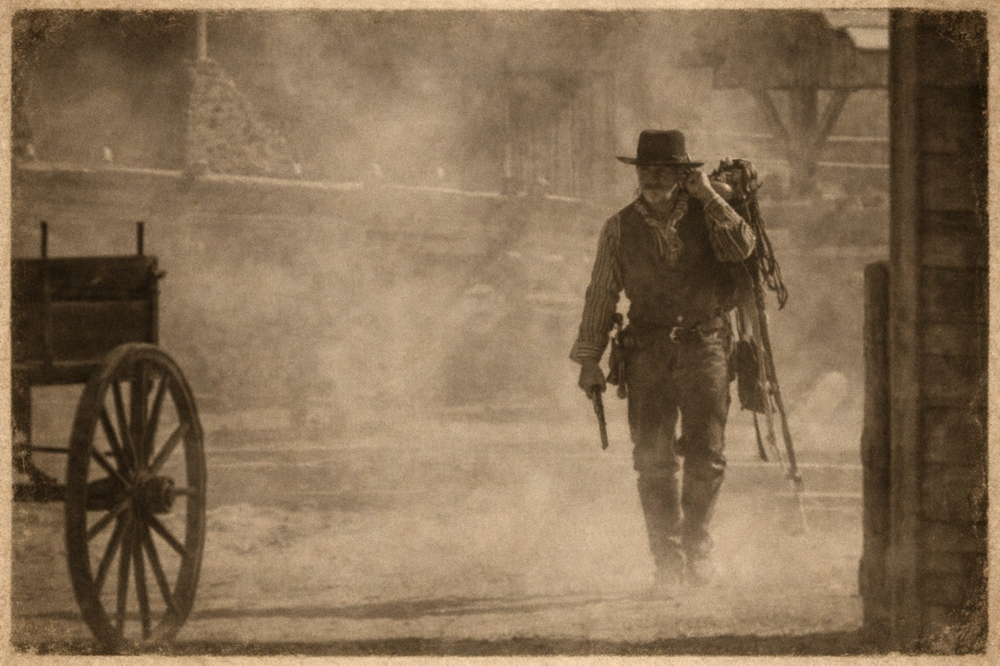
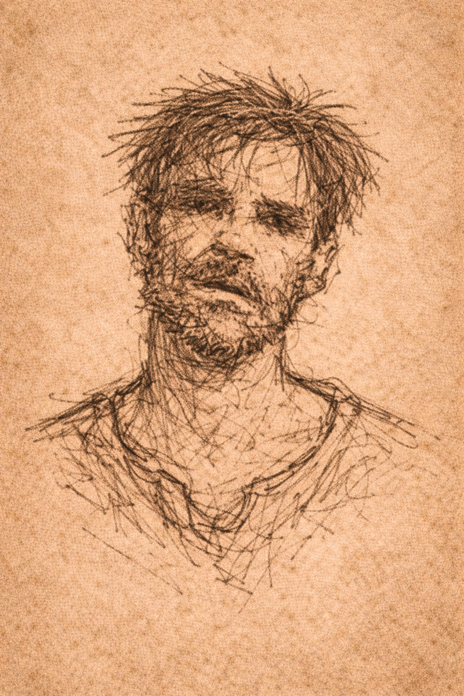
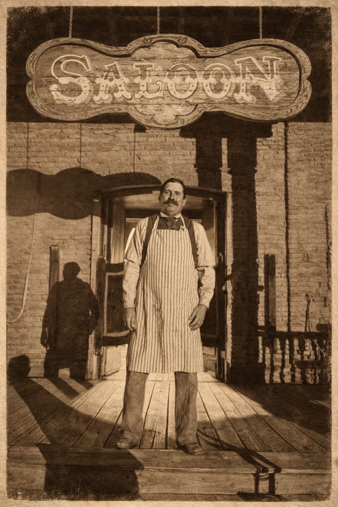
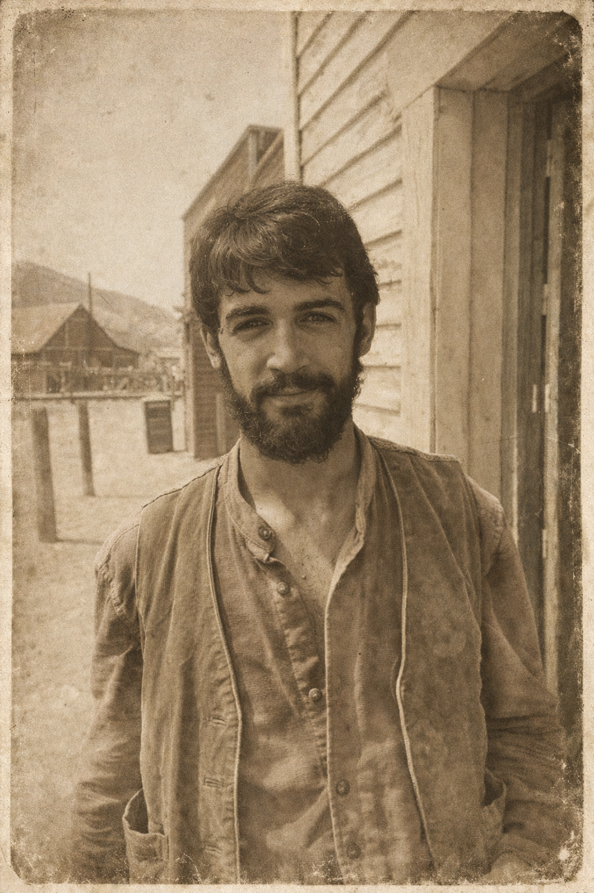

This historical gazette is reserved for members of the El Paso Verse community.
Requires: 1 PASO Credit or Genesis Collection ownership
Step back into 1880 and witness the birth of Breakwater through authentic frontier journalism.
Sign in to the Community Portal to access with your PASO credits
×
VOL. I — No. 1 — JANUARY 30, 1880
THEEL PASO GAZETTE
Printed in El Paso Verse, Circulated on Both Sides of the Rio Grande, Including Ciudad Juárez
PUBLISHED CONTINUALLY SINCE 1880 — PRICE: ONE PASO
BREAKWATER: RUMORS OF A NEW TOWN NORTH OF RIO GRANDE
Survey Flags Appear Across Northern Plain — Merchants Predict Land Rush
From Our Correspondent in the Field
The Proposed Breakwater Site — Undeveloped Northern Territory Photograph by C.S. Fly
Est. Town of Brownsville — A Model for the Territory Archive photograph from The Brownsville Democrat
Brownsville demonstrates what can be achieved in border country. Breakwater's promoters envision similar development in the northern territory.
Survey flags have appeared across the northern plain, prompting widespread talk of a proposed settlement known as Breakwater. Though no official claims have opened, the sight of survey tools and measuring chains has sparked considerable interest among traders, prospectors, and families currently camped along the ridge.
The land in question lies north of the Rio Grande, in territory long considered too remote for proper settlement. However, recent activity suggests that assessment may be changing. Wagon tracks now cross what was once virgin prairie, and more arrive daily to scout the terrain.
Promoters of the Breakwater development point to established border towns such as Brownsville as proof that civilization can flourish in this country. "What has been done there can be done here," one surveyor stated, though he declined to provide specifics of how Breakwater's harsher terrain and distance from existing supply routes would be overcome.
Merchants operating between Juárez and the northern outposts predict a land rush should the whispers become official proclamation. "Every man with coin enough for a plot will head north," said one trader who declined to give his name. "And those without coin will come anyway, hoping to stake their fortune through sweat."
For now, the desert holds its silence. The surveyors work without comment, the flags mark ground without explanation, and those gathered nearby wait for word—official or otherwise—that Breakwater has moved from rumor to reality.
The Texas General Land Office declined to comment when reached for this report. However, sources within the office confirm that multiple petitions for land development in the northern territory have been received in recent months.
Should Breakwater become official, it would represent the first major settlement in this section of territory since the Treaty of Guadalupe Hidalgo established the current border more than thirty years past.
RAILROAD SCOUTS SEEN PACING THE EASTERN RIDGE
A small team of railroad surveyors was spotted marking ground east of the proposed Breakwater townsite last Thursday. The men carried surveying equipment and were observed taking measurements along the eastern ridge for the better part of two days.

Railroad Scout on the Eastern Ridge Archive photograph from The San Antonio Express
When approached by this correspondent, the team's leader—who identified himself only as Mr. Hutchins—declined to elaborate on their purpose. Railroad officials in the regional office deny any authorized expansion into the territory.
However, word travels that a spur line may connect Breakwater to an eastern town once the settlement becomes formally established. As one surveyor offered when pressed:
★ "A town comes first. Then the iron." ★
Whether this represents official policy or merely the opinion of one man remains unclear. What is certain: the presence of railroad scouts suggests forces larger than simple homesteading are at play in the northern territory.
MYSTERIOUS PETITIONER SEEKS RIGHTS TO NORTHERN TERRITORY
Texas General Land Office Acknowledges Unusual Filing

Unidentified Man at the Rio Grande — Face Obscured Photograph by C.S. Fly
The Texas General Land Office has confirmed that an unidentified man has made formal inquiries regarding zoning and future development rights for a tract of nearly 90,000 acres of land north of the Rio Grande.
The man went back the way he came, crossing the river at a little-used ford, alone in a narrow skiff and slipping back into Mexico. That moment was captured by C.S. Fly, whose photographs of the frontier have become fixtures in regional papers. The image shows the man guiding his small boat with the ease of one familiar with hidden crossings. Fly notes, however, that the traveler kept his hat low on purpose, making it difficult to capture his face.
It was later discovered that he had signed into the Red Feather Hotel under the name "H. West." According to documents reviewed by this publication, his stated purpose was:
"A frontier community where story and land meet."
Such phrasing is uncommon in land petitions, which generally concern grazing, water rights, or commercial claims. When pressed for clarification, a clerk at the Land Office replied only:
"No decisions have been made."
For now, the applicant remains a figure of speculation—a man who arrives at the Land Office, signs with a single initial, speaks of building a place that does not yet exist, and disappears back across the border without explanation.
WHO IS H. WEST?
—A Question Raised by the Editor—
Whoever heard of a gringo hiding out in Mexico buying up land on the U.S. side? Some Mexicans claim they've seen him with maps no one recognizes—ancient paper, strange markings, the kind surveyors swear don't match any county line. Other folks near the border insist he came wandering up from the far Sonoran desert, looking half-starved and half-certain of where he was going.
Yet the region already seems to be shifting around him… as if the land knows something we don't.
COMMERCE & CURRENCY
NEW COIN GAINS FAVOR IN CROSS-BORDER TRADE
The PASO Coin — A New Currency Circulating in the Territory
Merchants operating on both sides of the Rio Grande are beginning to accept PASO coins and notes for supplies, tools, and land deposits. The currency has gained favor among traders and travelers for its convenience and portability.
"The coins are well-struck and hold their weight," explained one trader at the Juárez crossing. "And the paper notes are easier to carry than silver for large transactions."
Even certain merchants in Ciudad Juárez are beginning to accept PASO as means of exchange, though the practice remains limited to a handful of establishments willing to experiment with the private currency.
The National Treasury advises caution in accepting any new currencies not backed by the federal government. "Private notes carry risk," stated a Treasury circular distributed last month. "Citizens should verify the backing and legitimacy of any scrip before accepting it in trade."
HORSE PRICES RISE AS SETTLERS SCOUT THE PLAINS
Demand for sturdy mustangs and criollo mares has increased sharply in recent weeks. Long-ride temperament and sure footing across rough terrain command the highest bids at market.
A reliable gelding that sold for 40 silver dollars last month now fetches upward of 60. Mares proven for endurance trade even higher.
Several stables near the northern camps have begun accepting PASO notes at favorable rates, recognizing the currency's growing prevalence among would-be settlers.
NEW TRADING OUTFIT OPENS
A freight team operating under the name "Frontier Supply Co." has begun regular runs carrying tools, barrels of mescal, lumber, and general goods between Ciudad Juárez and the northern ridge camps.
The proprietors deny any connection to Breakwater speculation—though their route and timing suggest otherwise. Wagons arrive weekly, and demand has proven strong enough to justify additional teams.
MARSHAL PROPOSES FIREARM BAN FOR BREAKWATER
Avery Briggs Seeks to Prohibit Weapons Within Town Limits

A Lawman Walks the Streets of the Territory Archive photograph El Paso Gazette
Marshal Avery Briggs has made his intentions clear: should Breakwater become an official settlement, he will seek to prohibit the carrying of firearms within the town limits. The proposal has sparked considerable debate among those camped near the proposed site.
"Every town that wishes to prosper must choose between the gun or the gavel," Briggs stated when questioned about his plans. "I have seen too many promising settlements destroyed by men who believed disputes should be settled with lead rather than law."
Briggs, who served as deputy marshal in Dodge City before coming west, argues that a weapons ban would attract merchants, families, and investment capital that might otherwise avoid a frontier settlement.
"I have seen too many promising settlements destroyed by men who believed disputes should be settled with lead rather than law."
The proposal is not without precedent. Tombstone, Deadwood, and Dodge City have all implemented varying degrees of weapons restrictions within town boundaries. However, enforcement has proven difficult, and some argue such bans merely disarm the honest while criminals ignore the prohibition.
"A man has a right to defend himself," said prospector Thomas McKnight, who camps east of the survey flags. "Take away his gun and you make him prey for every outlaw who doesn't respect the marshal's rule."
Briggs acknowledges the concern but remains firm. "Within the town limits, the law defends the citizen. Beyond the limits, a man may carry what he wishes. This is not disarmament—it is civilization."
The marshal also noted that while border control is fierce, this area has historically seen outlaws from the north cross into Mexico. "Men with warrants know the Rio Grande well," Briggs stated. "A border crossing can mean the difference between a rope and a second chance."
When asked about rumors of a sanctuary for those with a past somewhere south of the border, a local trader who declined to give his name offered: "There are stories. Always have been. Men say there's a place down in the Chihuahua territory where a man's past doesn't follow him—if he can reach it and if he's got something to trade for silence." The trader shrugged. "But it may be only a rumor. The desert is full of them."
Marshal Briggs declined to comment on such speculation, noting only that his jurisdiction ends at the river.
The marshal has invited public comment and indicates he will hold a town meeting once Breakwater's status becomes official.
PUBLIC NOTICES
★ THE EL PASO GAZETTE ★
◆ ◆ ◆
CORRESPONDENT SOUGHT
The Gazette seeks a reliable journalist familiar with the northern territories. Must possess strong penmanship and the ability to verify sources. Experience with frontier reporting preferred.
Inquire at the Gazette office, El Paso.
PRINTING PRESS ASSISTANT
Experienced pressman wanted for type-setting and print operation. Must be punctual and detail-oriented. Knowledge of press maintenance desirable. Apply in person at the Gazette.
GEOLOGIST WANTED
Survey company seeks qualified geologist for mineral assessment and land evaluation work. Long-term engagement possible. References required. Contact J. Morrison, El Paso.
DENTIST AVAILABLE
H.C. Hage offers tooth extraction and dental services at the Rio Hotel, second floor. Hours: Tuesday and Friday afternoons.
LAND SURVEYOR
Licensed surveyor available for private land claims and boundary disputes. Theodolite and chain work. Fair rates. Inquire at Land Office.
MARSHAL SEEKS INFORMATION ON DANTE CORTEZ, KNOWN AS "LOBO"
Territorial authorities have circulated a photograph of a man identified as Dante Cortez, known throughout the borderlands by the alias "Lobo" — Spanish for wolf — in connection with several incidents reported along the Rio Grande crossing routes.
Marshal Avery Briggs states that Cortez is wanted for questioning, though no formal charges have been filed. "We have reports from multiple sources describing a figure matching this likeness," Briggs explained. "Some claim he operates as a guide. Others suggest less savory pursuits."
"Some say he's a ghost. Others say he's just a man who prefers the company of wolves to people."
Traders report that Cortez occasionally appears at remote camps, offering services as a guide through difficult terrain. He accepts payment in silver or goods but never stays longer than necessary to conduct business.
"He knows every trail and every water source between here and the mountains," said one unnamed source. "If you need to cross country no one else can cross, Lobo can take you. But he doesn't talk, and he doesn't explain himself."
Anyone with information regarding Dante Cortez is asked to contact the Marshal's office. Discretion assured.

Known As:Dante Cortez, alias "Lobo"
Description: Age 30-50 years; Height approximately 6 feet; Lean, weathered appearance; Moves silently, speaks little; Known to frequent remote crossings and canyon trails.
SOCIETY & CULTURE
THE CRESCENT PLAYERS PASS THROUGH
A traveling theatre troupe from New Orleans, known as The Crescent Players, gave a brief performance near the river crossing last Saturday evening.
The repertoire included scenes from Shakespeare and an original piece titled "The Desert Bride." Approximately forty persons attended, including several surveyors and camp followers.
The troupe's manager, Mr. Edmund Fairchild, indicated they may return "if a proper town rises with a hall suitable for performance."
"We follow civilization," Fairchild stated. "Where towns grow, so grows appetite for the stage."
HERDER REPORTS LIGHTS ON NORTHERN PLAIN
A local herder, Miguel Cortez, claims to have witnessed unusual lights drifting east of the canyon on three separate occasions over the past fortnight.
"They moved slow, like lanterns," Cortez told this correspondent. "But there was no one carrying them. They floated."
Territorial officials attribute the phenomenon to heat shimmer or perhaps distant campfires creating optical effects across the flat landscape. No investigation is planned.
Similar reports have surfaced periodically in the region, typically dismissed as products of exhaustion or desert heat.
INTERVIEW: HUCK RAMIREZ
Trader and Prospective Breakwater Resident Speaks on His Plans

Huck Ramirez — Trader and Man of Enterprise on the Frontier Photograph by C.S. Fly
Huck Ramirez arrived from California six months past with capital, ambition, and plans to establish himself in the territory. A trader and entrepreneur by nature, he has been studying the borderlands with the calculating eye of a man who knows opportunity when he sees it.
We spoke with Ramirez at a trading post near Juárez, where he has been quietly acquiring inventory and making connections on both sides of the river.
Gazette: You came west from California. What drew you to this territory?
Ramirez: California's getting crowded. Too many men chasing the same opportunities. Out here, a man with resources and sense can still stake a real claim. I saw the survey reports, heard the whispers about development. Figured I'd arrive before the rush instead of after.
Gazette: Your name suggests Mexican heritage, yet you hail from California.
Ramirez: My grandfather came up from Sonora during the gold rush. Married an American woman. I was born in San Francisco—as American as any man here. The name opens doors on both sides of the river. That's useful in border country.
Gazette: What would you build if Breakwater becomes official?
Ramirez: If they stake it, I'll take a corner lot. Maybe put up a hotel and an air-cooled bar. Every town needs shade and a drink, especially out in that country. Man gets thirsty just thinking about it.
Gazette: Do you believe the settlement will succeed?
Ramirez: I believe H. West is serious, and I believe he has backing—quiet backing, but real. When a man petitions the Land Office and surveyors show up a week later, that's not coincidence. Something's moving, and I intend to move with it.
Ramirez estimates that if Breakwater opens, fifty businesses will establish within the first year. His is one of the few Mexican surnames among the American settlers gathering near the proposed site.
EDITORIAL
BREAKWATER — HOPE OR HAZE?
By the Editor
Rumor runs faster than truth on the frontier. It always has. A man whispers something at a trading post, and by the time it reaches the next camp, it's become gospel.
Breakwater may be real. The surveys suggest as much. H. West's petition to the Land Office carries weight. Railroad scouts do not pace ground for amusement. And yet—none of this guarantees a town will rise.
But who is H. West? This question deserves asking. He appears from nowhere with maps—but does he have any capital? He speaks of "story meeting land" in language more suited to a theater than a land office. No one claims to have done business with him before. No one can name where his money comes from.
Some say he arrived from the east. Others insist he came up from Mexico. A few claim to have seen him in California years back, though under what name and doing what business, they cannot say. The man leaves no trail—which in itself raises questions a prudent settler should consider.
Who is H. West? This question deserves asking.
We have seen ambitious plans collapse under the weight of reality. Land proves too harsh. Water proves too scarce. Investors lose interest when the first winter proves brutal and the spring proves worse. We have also seen confidence men spin tales of prosperity to fleece the hopeful.
Yet we have also seen towns rise from nothing more than determination and a handful of stubborn men who refused to quit when sense dictated they should. And H. West, whatever else he may be, has put official documents on file. That takes either genuine intent or remarkable audacity.
Surveyors walk. Families gather. H. West whispers visions. And the PASO coin circulate as if the economy already exists.
Until the first stake hits the ground, Breakwater remains a mirage with potential. But mirages sometimes become real when enough people believe in them long enough to make them so.
The land decides everything. We shall see what it decides here. And we shall see whether H. West proves to be the visionary he claims—or something else entirely.
Until then, to show we are with the times, you can now buy this paper with one Paso. Whatever its worth.
CLASSIFIEDS
HORSES FOR SALE — Two bay mares, one dun gelding. All sound and proven for long rides. PASO notes accepted. Inquire at northern ridge camp.
WANTED: GUIDES — Riders familiar with shallow crossings and safe routes between Juárez and northern territory. Steady work available.
HELP WANTED — Survey crews hiring strong backs for chain work and stake driving. Payment daily in silver or PASO.
LOST — Silver pocket watch with engraved initials "J.P.M." near ridge trail. Sentimental value. Reward offered.
MISS LILA'S BOARDING HOUSE — Gentlemen seeking refined companionship and evening entertainment welcome. Discreet accommodations. Piano music nightly. No questions asked. Rear entrance on Mesquite Street.
WAGON FOR SALE — Sturdy freight wagon with canvas cover. Needs minor repair to rear axle. Owner relocating quickly. Very fair price for immediate sale. Ask no questions.
MATRIMONIAL OPPORTUNITY — Widower, age 47, owns three mules and a profitable claim, seeks respectable woman for companionship and domestic arrangements. Must tolerate snoring and strong opinions about railroad routes.
SADDLE REPAIR — Experienced leather worker offering mending services. Also makes holsters and belts to order. No judgment on bullet holes.
LOST — One wife. Last seen arguing with a whiskey drummer headed west. If found, please keep her. Signed, A Grateful Man.
WANTED TO BUY — Surveying equipment in good condition. Will pay cash or trade goods. Leave message at Frontier Supply Co.
VOICES FROM THE BORDERLANDS
Portraits of Those Who Call the Rio Grande Home

A Resident of Ciudad Juárez — Keeper of Stories Photograph by C.S. Fly
The borderlands are home to men and women who have known this territory for generations. While surveyors arrive with fresh maps and newcomers speak of Breakwater with hopeful speculation, there are those who have lived here long before any settlement was dreamed.
South of the Rio Grande, in the streets and plazas of Ciudad Juárez, one finds merchants, craftsmen, and families whose roots run deep in this desert soil. They watch the northern developments with interest—some with optimism, others with the skepticism that comes from having witnessed previous promises fade under the relentless sun.
"The desert does not change. Men come with plans, and the desert decides whether those plans will stand."
"The desert does not change," one longtime resident observed. "Men come with plans, and the desert decides whether those plans will stand. We have seen towns rise and fall. We have seen the Rio Grande flood and dry to a trickle. The land remembers what men forget."
These voices carry wisdom earned through decades of living where two nations meet. They understand the rhythms of trade, the importance of water, and the reality that survival in this country requires respect for the land above all else.
If against all odds, Breakwater moves from rumor toward reality, these seasoned inhabitants of the borderlands offer perspective that newcomers would do well to heed.